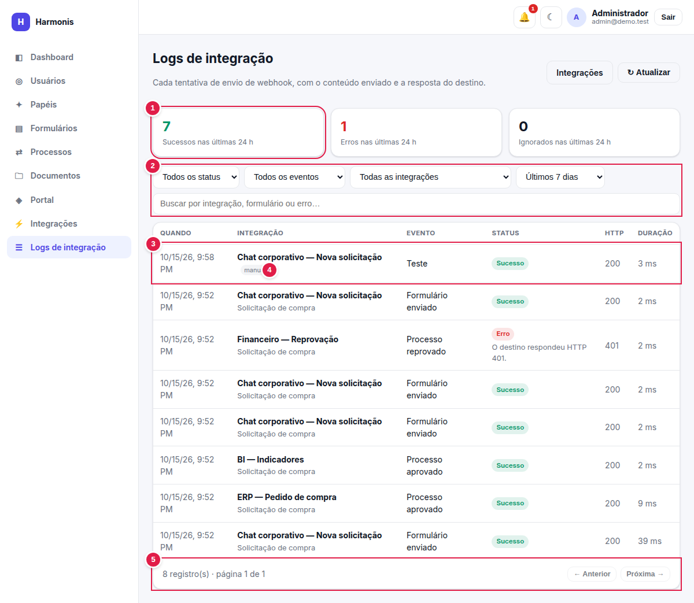
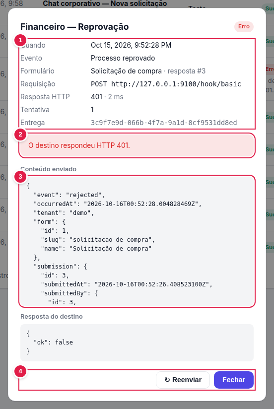

Logs de integração
O histórico de cada tentativa de envio de webhook: o que foi enviado, o que o destino respondeu e quanto tempo levou.
Ver os logs: integrations.logs. Reenviar: integrations.logs e integrations.update.
Os logs mostram o conteúdo enviado (dados dos formulários); conceda a permissão somente a quem pode vê-los.
A tela de logs

- Contadores das últimas 24 h — sucessos, erros e ignorados.
- Filtros — status, evento, integração, período e busca livre.
- Registro — cada linha é uma tentativa; clique para abrir o detalhe.
- Etiquetas — manual (teste ou reenvio feito por uma pessoa) e tentativa N (retentativa automática).
- Paginação — 25 registros por página, do mais recente ao mais antigo.
Filtros
| Filtro | Opções |
|---|---|
| Status | Todos · Sucesso · Erro · Ignorado. |
| Evento | Todos · Formulário enviado · Processo aprovado · Processo reprovado · Teste. |
| Integração | Todas ou uma integração específica (lista disponível a quem também tem integrations.view). |
| Período | Últimas 24 horas · Últimos 7 dias (padrão) · Últimos 30 dias · Todo o período. |
| Busca | Procura no nome da integração, no nome do formulário e na mensagem de erro (tecle Enter). |
Ao abrir os logs pelo ícone ☰ de uma integração, o filtro de integração já vem preenchido.
Colunas
| Coluna | Conteúdo |
|---|---|
| Quando | Data e hora da tentativa. |
| Integração | Nome (como era no momento do envio), formulário de origem e etiquetas manual/tentativa N. |
| Evento | Formulário enviado, Processo aprovado, Processo reprovado ou Teste. |
| Status | Sucesso, Erro, Erro · repetirá ou Ignorado, com a mensagem de erro abaixo. |
| HTTP | Código de resposta do destino (— se não houve resposta). |
| Duração | Tempo da tentativa em milissegundos. |
Os status
| Status | Significado |
|---|---|
| Sucesso | O destino respondeu HTTP 2xx. |
| Erro | A tentativa falhou e não será repetida (ou era a última). |
| Erro · repetirá | Falha transitória: uma nova tentativa já está agendada. Ela aparecerá como outra linha, com a etiqueta tentativa N. |
| Ignorado | Nenhum envio foi feito: a integração estava despublicada ou foi excluída. |
Detalhe de um registro

- Resumo — quando, evento, formulário (e resposta de origem), método e URL (com valores sensíveis mascarados), resposta HTTP e duração, número da tentativa e o identificador da entrega.
- Mensagem — o motivo do erro, em destaque.
- Conteúdo enviado — o JSON exato que foi enviado ao destino, formatado.
- Reenviar — envia o mesmo conteúdo novamente (e Fechar).
Abaixo do conteúdo enviado aparece também a Resposta do destino (até 4.000 caracteres).
Reenviar manualmente
Útil depois de corrigir a causa de um erro (credencial, URL, sistema de destino fora do ar):
- Corrija a integração (se necessário) e confira com Enviar teste.
- Abra o registro com erro nos logs e clique em ↻ Reenviar.
- O resultado aparece na hora na mesma janela e uma nova linha (manual) é adicionada à lista.
- O reenvio usa o conteúdo original gravado no log (não recalcula os dados), com um novo identificador de entrega.
- Funciona mesmo que a integração esteja em rascunho; não funciona se ela foi excluída (“A integração deste registro foi excluída.”).
- Não há retentativas automáticas em reenvios manuais.
Diagnóstico de erros comuns
| Mensagem no log | O que significa / o que fazer |
|---|---|
| O destino respondeu HTTP 401 / 403. | Credencial inválida ou sem permissão. Revise a autenticação (um segredo digitado errado é a causa mais comum) e use Enviar teste. |
| O destino respondeu HTTP 400 / 404 / 422. | O destino recusou a requisição: URL ou método incorretos, ou o corpo não tem o formato esperado. Veja a Resposta do destino no detalhe — costuma explicar o motivo. Não é repetido automaticamente. |
| O destino respondeu HTTP 5xx / 429 / 408. | Problema temporário no destino. É repetido automaticamente conforme as retentativas da integração. |
| Tempo esgotado após N s. | O destino demorou demais. Aumente o Tempo limite se for lento por natureza, ou verifique o sistema de destino. |
| Falha de rede: … | Não foi possível conectar (host fora do ar, porta fechada, certificado inválido). Verifique a URL e a rede. |
| Redirecionamento não seguido (HTTP 301/302…). | O destino redirecionou para outro endereço; por segurança o Harmonis não segue. Use a URL final diretamente. |
| Destino em rede privada/loopback bloqueado… | A empresa não habilitou integrações com a rede interna. Peça à TI (HARMONIS_WEBHOOK_ALLOW_PRIVATE). |
| Endereços link-local (ex.: metadados de nuvem) são bloqueados. | Destino proibido por segurança; não há como liberar. |
| Não foi possível resolver o host: … | O nome do servidor não existe ou o DNS não resolve. Confira a URL. |
| Pré-autenticação falhou (HTTP N). | O login do token falhou. Confira URL de login, usuário, senha, formato do corpo e nomes dos campos. |
| A resposta da pré-autenticação não contém o campo “…”. | O Caminho do token está errado. Ajuste (ex.: data.token). |
| Não autorizado (HTTP 401) mesmo após renovar o token. | O novo token também foi recusado: o usuário de integração não tem acesso ao endpoint. |
| A integração não está publicada; entrega ignorada. | Publique a integração. |
| A integração foi excluída; entrega ignorada. | Havia um vínculo antigo; já não há o que enviar. |
| Não foi possível montar o payload: … | Problema ao ler a resposta/formulário no momento do envio (ex.: formulário removido). Fale com a TI. |
Retenção
Eles permanecem mesmo que a integração ou o formulário sejam excluídos (o nome e a URL são guardados no próprio registro). Em empresas com muito volume, a TI deve planejar uma rotina de limpeza periódica.